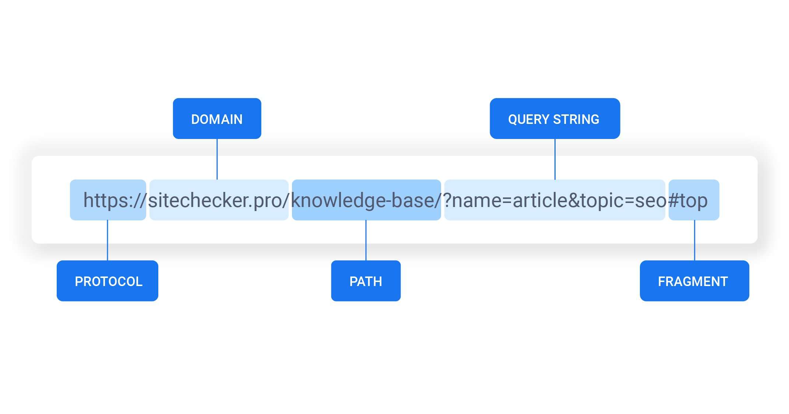

Аббревиатура
Аббревиатура URL расшифровывается по буквам как Uniform Resource Locator. УРЛ считается стандартизированной формулой записей адресов в сети интернет. Каждый УРЛ в сети является уникализированным и является указанием на местонахождение сайта в сети. Сначала создателями предполагалось использовать УРЛ как отдельное местонахождение важных файлов в сети интернет. Позднее идея глобализировалась до современных уровней и масштабов. Сегодня УРЛ служит для обозначения местонахождения любого файла и сайта в рамках сети интернет.
Общие форматы URL
Указатели адресов имеют свой состав и основную, общепринятую форму записи. К составу URL относятся следующие части:
- протоколы URL определяют типы передачи данных. http – это форма обычного текста, https – протокол защищенной версии, ftp – протоколы передачи файлов, а формат mailto показывает передачу данных электронной почты;
- тип сайта показывает, под какой браузер приоритетно адаптирован тот или иной вид ресурса. Ранее принятые стандарты обязывали все УРЛ начинаться с тройной www. Такая аббревиатура идентифицировала сайт как общедоступный с любого браузера, повышая его репутацию и уровень трафика с конверсией. Сейчас стандарты такого формата упразднены и при отсутствии указателя типа сайта система по умолчанию определяет его как ресурс, доступный для любого посетителя. В случае адаптации версии сайта под мобильные устройства и платформы указания вида wap и www должны быть в наличии;
- доменное имя-это уникальное имя адреса ресурса в сети интернет по глобальному поиску;
- показатель порт определяет номер порта для доступа. Стоит помнить, что любое приложение сетевого типа имеет свои личные протоколы обмена информацией, привязанные к определённым типам портов. Протокол версии НТТР работает по портам 80 или 8080. При наличии на сервере запроса только страниц веб-типа порт не указывается. При наличии возможности получения доступа к прочим данным указание номера порта необходимо.
Также существует такой вид данных, как путь URL. Он отвечает за точное указание местоположения страницы на определённом сервере.